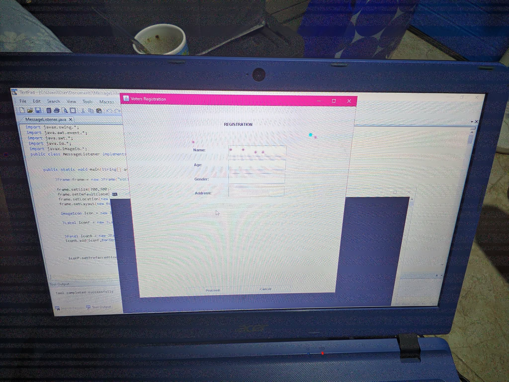
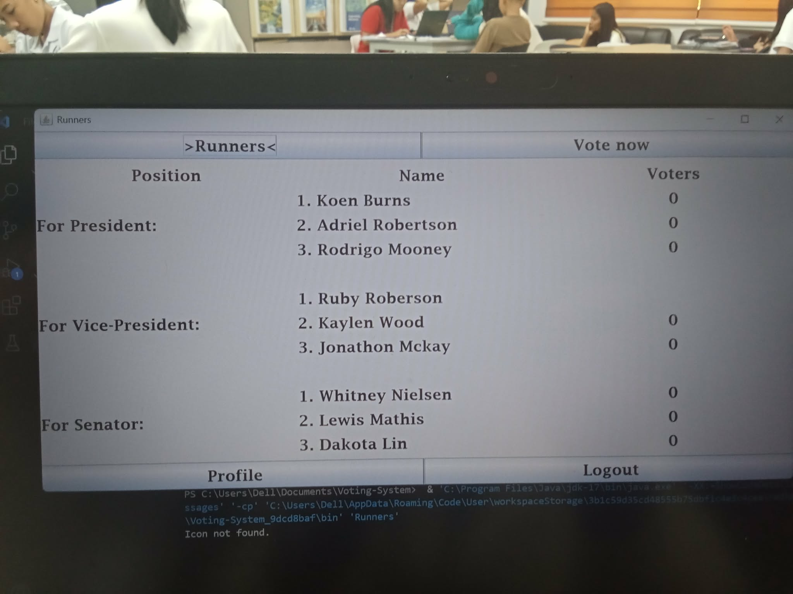
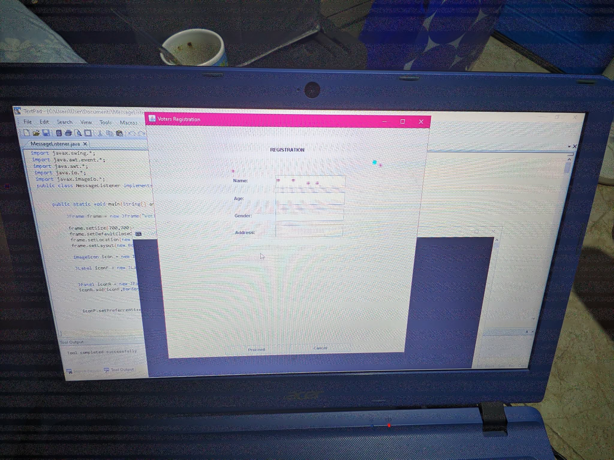
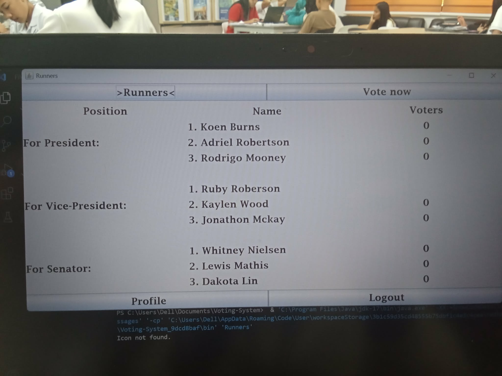
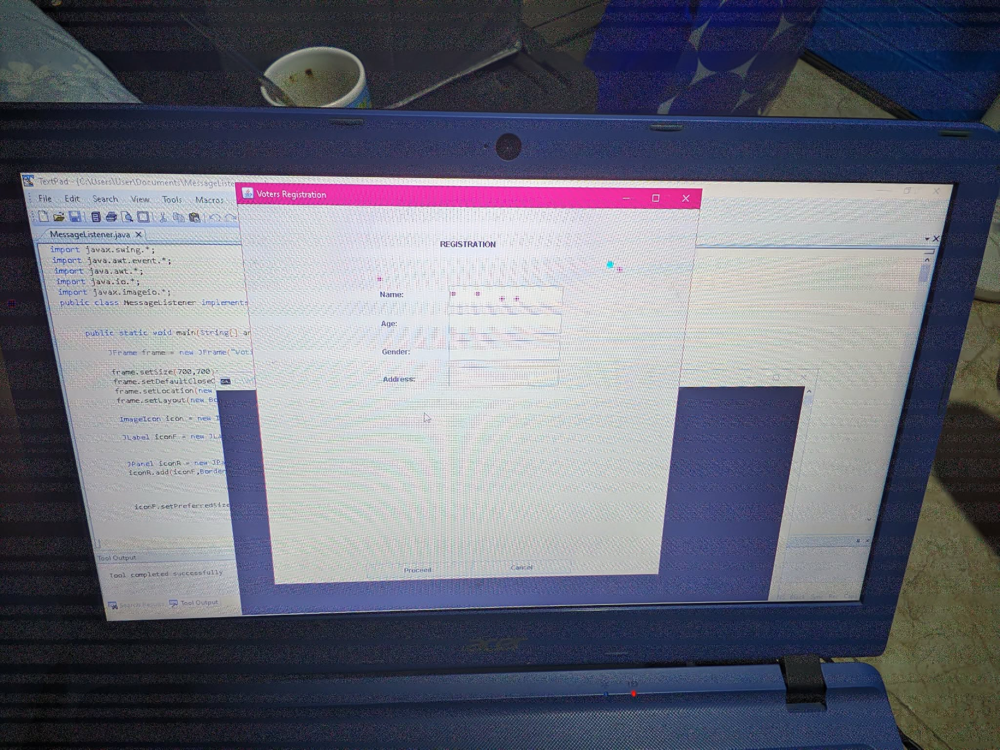
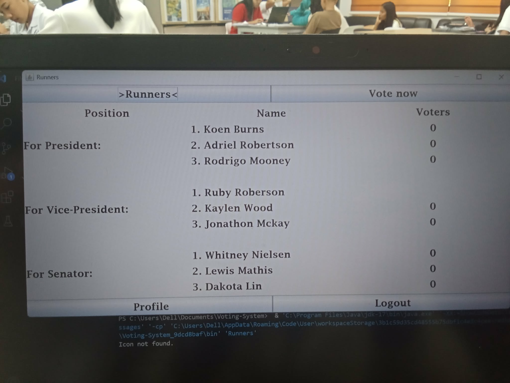

January 28, 2026 Welcome to Version 2 of my personal web portfolio!
This update includes comprehensive improvements in performance, UI/UX, interactivity, accessibility, and developer features.
Every aspect has been refined to provide a modern, smooth, and responsive experience across desktop, tablet, and mobile devices.
What’s New / Improvements:
🧭 Redesigned Navigation:Mobile menu supports ESC toggling, closes automatically after section selection, and highlights the active section. Desktop sidebar is collapsible and provides smooth hover interactions.
✨ Smooth Section & Button Animations:Fade-in, slide-up, and hover effects optimized for GPU-friendly rendering. Animations are smoother on all devices, minimizing lag and providing a visually pleasant experience.
👀 Enhanced Scroll Reveal & Hover Interactions:Sections, photo grids, and buttons animate gracefully on entry with subtle hover cues. Mobile touch feedback has been improved for intuitive interaction.
📷 Upgraded Photo Sliders:Touch swipe, click navigation, and autoplay enabled. Sliders now lazy-load images for faster page performance and smoother GPU-accelerated transitions.
📱 Improved Responsiveness & Adaptive UI:Layouts and typography dynamically adjust for mobile, tablet, and desktop. Collapsible sidebar, padding, and font sizes optimized for readability across all screen sizes.
⚡ Code & Performance Optimizations:Streamlined JS/CSS, lazy-loading images, reduced repaints, and improved memory handling. Faster load times, smoother transitions, and GPU-friendly rendering across devices.
📝 Custom Feedback System:Replaces outdated Google Forms. Users can submit feedback directly through a custom form that sends submissions straight to my email, making feedback private, reliable, and fully integrated into the portfolio.
🎨 Visual Polish & Consistency:Color schemes, shadowing, hover effects, and interactive cues refined for a professional, clean look. Minor layout adjustments improve alignment and spacing across all devices.
🌙 Dark Mode Enhancements:Dark mode improved with consistent contrasts, shadows, and highlights. Toggle now preserves user preference and ensures readability for long sessions.
🔑 Accessibility & Keyboard Navigation:Enhanced keyboard navigation for menus, sliders, and interactive sections. Focus states added to buttons and links to improve accessibility for all users.
📈 SEO & Metadata Improvements:Optimized page titles, meta descriptions, and alt text for images to improve search visibility and enhance content discoverability.
💨 Font & Typography Optimization:Web fonts preloaded and system fallbacks applied for faster rendering. Line-height, spacing, and font sizes adjusted for readability across all devices.
🔧 Developer-Friendly Structure:Clean and modular HTML, CSS, and JS structure for easier maintenance, scalability, and quick updates in the future.
🖱️ Interactive Tooltips & Hover Text:Added helpful hover tooltips for buttons and links on PC, while touch-friendly equivalents are available for mobile and tablet users.
💡 Lazy Loading & Image Optimization:Images now load on demand to reduce initial load time and improve perceived performance, especially for large photo grids and sliders.
📂 Expanded Portfolio & Project Count:Added X new projects, images, and showcases across web, desktop, and mobile categories, bringing the total portfolio items to Y. All images now lazy-load for better performance.
🏅 Achievements & Badges:Showcasing new certifications, awards, and skill badges to reflect growth and accomplishments as a student developer.
Version 2 delivers a fully polished, GPU-friendly, responsive, and accessible web portfolio with modern UI/UX, seamless interactivity, optimized performance, and integrated feedback collection.
Every detail has been carefully enhanced to provide an enjoyable browsing experience while showcasing my projects and skills effectively.
Welcome
Hello! I'm Junes Manuel Rafal, a student developer exploring web, desktop, and mobile systems. This portfolio documents my journey, experiments, and unfinished ideas because learning never stops.
Portfolio Highlights
A preserved glimpse of my unfinished 2D Isekai adventure game.
This is a contractor website design showcasing clear navigation at top, with a style of single page with many sections
a polished color system. It includes both dark
and light modes for a modern, professional look across device's different light nits level.
A visual development concept showcasing 3D motion,
clean timing, and perspective handling
Some photos of yours truly:
1/2
A presentation video explaining the coffee shop menu system.
A showcase of my Java Swing portfolio system.
My coffee shop ordering system.
A successful photo with partner and programming panelists, presenting our Online Voting Tally System.


1/3
A collection of photographs I personally edited enhancing mood, atmosphere, and color while keeping a natural look.
1/8
About Me
Hello! I’m Junes Manuel Rafal, a 20-year-old student and aspiring software developer with a passion for creating interactive, user-friendly experiences across web, desktop, and mobile platforms. I enjoy combining design, functionality, and creativity to build projects that are both practical and visually engaging.
What I thrive on:
Solving challenging problems
Exploring emerging technologies and tools
Transforming ideas into polished, functional projects
Continuous learning and experimenting with new frameworks and software
Outside of development, I enjoy:
Playing guitar, singing, and listening to music
Watching anime, reading manhwa, and isekai fantasy and even romance webtoons
Staying active with running, bodyweight workouts, and staying healthy
Spending quality time with friends and learning from real-world experiences
I’m currently a 2nd-year student at Cebu Technological University – Danao Campus, focused on expanding my skills, learning continuously, and building projects that reflect my growth, creativity, and passion for technology. Through this portfolio, I aim to showcase not only my work but also my journey of personal growth, problem-solving, and dedication to making meaningful, engaging experiences across multiple platforms.
About the Program
This program showcases my journey as a student developer. Every feature demonstrates improvements in design, performance, responsiveness, and user experience.
🧭 Redesigned Navigation:Mobile menu supports ESC toggling and auto-closes after selecting a section.
✨ Smooth Section Animations:Fluid fade-in and slide-up effects for a modern browsing experience.
👀 Enhanced Scroll Reveal:Sections and photo grid images animate gracefully when entering the viewport.
📷 Upgraded Photo Sliders:Touch swipe support and automatic slideshow for intuitive navigation.
📱 Improved Responsiveness:Optimized layout and typography for all screen sizes.
⚡ Code & Performance Optimizations:Faster load times and smoother transitions.
🎨 Visual Polish:Refined hover effects, color consistency, and shadowing for a sleek, professional look.
This section combines who I am and the evolution of my portfolio, presenting my personal journey and continuous improvements.
Skills & Expertise
HTML: I create semantic, accessible, and structured web pages, ensuring content is clear and navigable for all users. I take care of the little details like headings, forms, and links so everything feels polished.
CSS: I design responsive layouts, themes, and smooth UI interactions that feel modern and professional. From hover effects to full color schemes, I focus on visuals that enhance the user experience.
JavaScript: I add interactivity and logic to websites and applications, from menus and sliders to dynamic content. My goal is to make interfaces intuitive and responsive, keeping the user engaged.
Java: I develop desktop applications using Java Swing, building functional, user-friendly systems that perform reliably. I enjoy turning complex requirements into simple, usable tools.
System Knowledge: I understand how computers work, including processors, performance tuning, and even flashing custom OS for experimentation. This helps me optimize software and understand technical limitations.
Creative Skills: I apply creativity through photo editing, color grading, and visual composition. I focus on balance, harmony, and aesthetics to make projects not just functional, but visually appealing.
Game Development: I’m exploring 2D RPG projects as a beginner and have hands-on experience with FPS game mechanics. I enjoy learning game logic, designing maps, and understanding how systems interact to create fun experiences.
Problem-Solving & Learning: I have a passion for discovering solutions, debugging, and learning new tools or frameworks. Every challenge I face is a step forward in growing my skills and creating better projects.
These skills reflect who I am as a student and developer: I combine technical knowledge, creativity, and curiosity to design systems and projects that are functional, polished, and enjoyable to use. Every project I create is a learning experience, and I take pride in refining every detail to make it seamless.
From coding websites and desktop apps to exploring game development, I’m constantly building, experimenting, and improving, always aiming to craft tools and experiences that matter.
Projects
Java Swing Portfolio System:A desktop application with a local database, designed to organize and showcase personal and academic projects efficiently. This project reflects my dedication to usability and UI polish.
Contractor's Materials Management System:A practical tool for managing construction materials with automatic calculations. Still unfinished, but it taught me valuable lessons in logic, calculations, and workflow design.
Coffee Shop Ordering System:Developed for both desktop and web, combining smooth interactivity, clean UI, and practical functionality an example of turning ideas into usable systems.
Voting Tally System:A desktop Java application designed to make election counting more accurate and streamlined. This project sharpened my attention to detail and problem-solving skills.
2D RPG / Isekai Game:A personal game development experiment exploring story, mechanics, and visuals. Unfinished due to financial limitations, but it reflects my creativity and love for building immersive experiences.
Contractor Website:A contractor website design showcasing transparent navigation, a single-page layout, and a polished color system. Includes both dark and light modes for a modern.
3D Rotating Letters:A visual development concept demonstrating 3D motion, smooth timing, and perspective handling, captured directly from a live execution of the coded animation.
Contact
I’d love to hear from you! Whether it’s collaboration, questions, or just saying hi, reach out through any of the platforms below:


 


